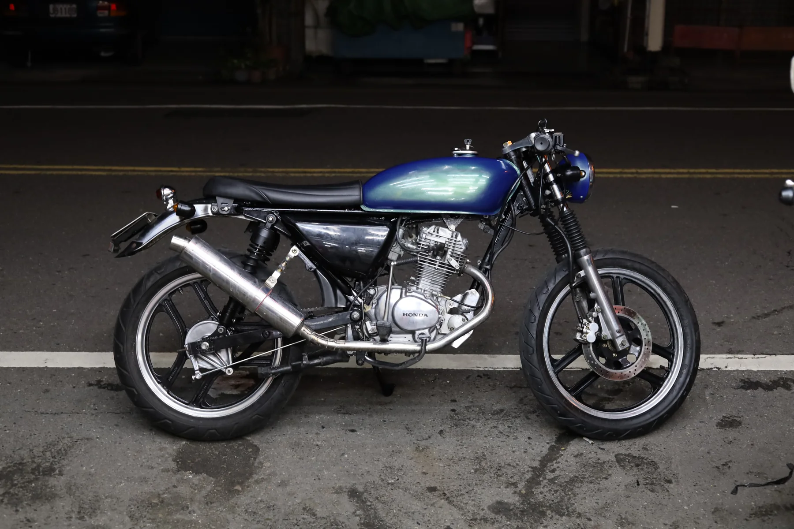

SYM Wolf 125
A Taiwanese commuter single rebuilt into a cafe racer over the course of a year, down to spraying the bodywork by hand.

The bike
The SYM Wolf 125 is a Taiwanese institution: a small, simple, Honda-derived single that has been in production in one form or another for decades. They are cheap, they are everywhere, and there is a deep local culture of pulling them apart — which makes one the ideal thing to learn on. Nothing you can do to a Wolf is unrecoverable.
The rebuild
The brief was cafe racer, taken seriously rather than as a set of bolt-on parts: a flat bench seat and reworked tail to give it a straight line from tank to rear, low bars, and an upswept megaphone exhaust. Everything came apart and went back together, and most of the year went on the parts of that nobody photographs.
Paint
The bodywork was prepped, primed and sprayed by hand, in a colour that reads blue from one angle and green from another. Spraying is the part of a build with the least forgiveness: the finish records every mistake in the twenty minutes before it, and the only fix is to flat it back and start the sequence again.
I learned the same lesson here that firmware never quite teaches, because firmware always has a rollback. Mechanical work has no undo. You plan the whole sequence before you pick up the gun, or you do it twice.